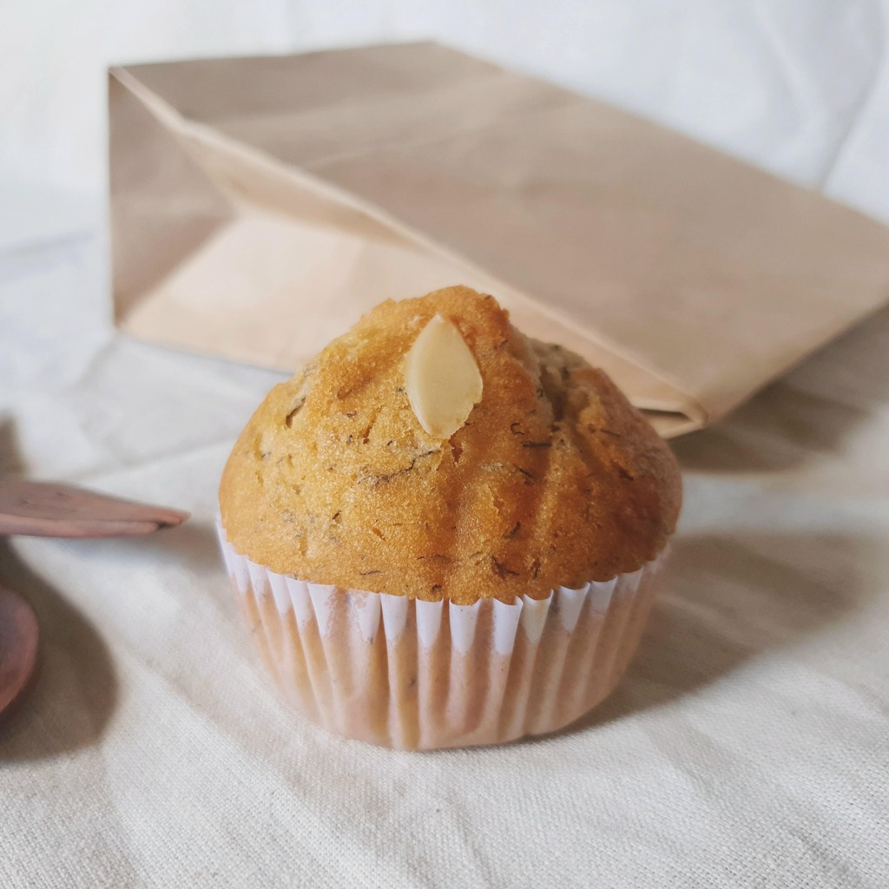

Life of a Muffin
Muffins, those delectable treats, come in a variety of flavors and styles to tantalize your taste buds. From classic blueberry muffins to rich chocolate chip delights, muffins are the ultimate comfort food. These small, baked wonders are perfect for breakfast, snacks, or dessert. The aroma of freshly baked muffins wafting through the kitchen is simply irresistible. Imagine taking a bite of a warm, moist banana nut muffin, where the sweet, ripe bananas blend perfectly with the crunchy walnuts. Alternatively, a zesty lemon poppy seed muffin can provide a burst of citrusy freshness to kickstart your day. Muffins aren't just about flavor; they're about creativity too. You can experiment with a multitude of ingredients, from fresh fruits to spices, and even vegetables. Pumpkin muffins with a hint of cinnamon or savory cornbread muffins with jalapeños offer a twist to the traditional muffin experience. Whether you prefer them with a crumbly streusel topping, a sugary glaze, or a simple dusting of powdered sugar, muffins are a versatile indulgence. So, why not bake your own batch today and savor the joy of homemade muffins, straight from the oven to your plate?
Facts about Muffin
- Blueberry muffins, chocolate chip delights, zesty lemon poppy seed; muffin flavors for all.
- Warm, moist banana nut muffin, or savory cornbread jalapeño twist; muffin creativity explored.
- Streusel topping, sugary glaze, or powdered sugar; versatile muffin indulgence. Homemade joy from oven to plate.